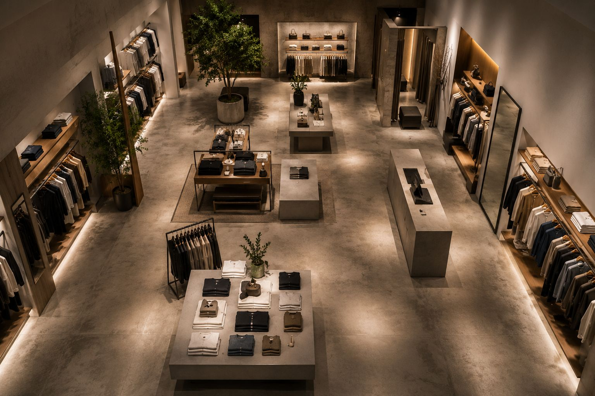
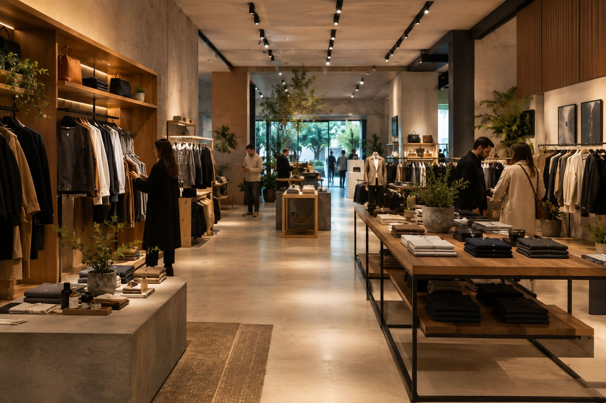

La forma en que un espacio está organizado determina qué productos se ven primero, cuánto tiempo permanece una persona dentro del establecimiento, qué recorrido realiza y qué oportunidades de compra encuentra durante ese recorrido.
Por eso, el layout no es simplemente un plano de distribución. Es una decisión estratégica que puede mejorar la experiencia de compra, optimizar la operación del negocio y aumentar el potencial comercial del espacio.
En este artículo explicamos cómo planear el layout de una tienda, qué elementos deben analizarse antes de diseñarlo y cuáles son los errores más comunes que afectan el desempeño de un punto de venta.
¿Qué es el layout de una tienda?
El layout comercial es la organización estratégica del espacio dentro de una tienda. Define la ubicación de los productos, exhibidores, mobiliario, cajas, áreas de circulación y puntos de atención al cliente.
Su objetivo es equilibrar tres factores fundamentales:
- Experiencia del cliente.
- Exhibición eficiente del producto.
- Operación rentable del negocio.
Un buen layout ayuda al cliente a orientarse con facilidad, descubrir más productos y completar su compra sin fricciones. Al mismo tiempo, facilita el trabajo del personal, mejora el control del inventario y aprovecha mejor cada metro cuadrado.
¿Por qué el layout influye en las ventas?
Las personas rara vez recorren una tienda de forma completamente aleatoria. La distribución del espacio influye en su comportamiento desde el momento en que cruzan la puerta.
Investigaciones sobre comportamiento del consumidor en retail muestran que la circulación, la visibilidad de los productos y la facilidad de navegación afectan variables como el tiempo de permanencia, la exploración del surtido y la percepción de calidad del establecimiento.
Autores como Paco Underhill, en Why We Buy, documentan cómo pequeños cambios en la organización del espacio pueden modificar significativamente la forma en que los clientes interactúan con una tienda.
El layout, por tanto, no garantiza ventas por sí solo, pero sí puede crear condiciones que favorezcan una experiencia más intuitiva y eficiente.
Antes de dibujar un plano: define el objetivo comercial
Uno de los errores más comunes es comenzar por el mobiliario o la decoración.
Antes de diseñar el layout, es necesario responder preguntas estratégicas como:
- ¿Qué categorías generan mayor margen?
- ¿Qué productos queremos destacar?
- ¿Qué recorrido queremos que haga el cliente?
- ¿Cuál es el ticket promedio objetivo?
- ¿Qué tipo de experiencia queremos transmitir?
El layout debe responder a los objetivos del negocio, no únicamente a criterios estéticos.
Los elementos clave para planear un layout efectivo
1. La zona de descompresión
Es el primer espacio que encuentra el cliente al entrar.
En los primeros metros, las personas suelen adaptarse al entorno: ajustan la velocidad, observan el espacio y comienzan a orientarse.
Por ello, esta zona no debería saturarse con demasiados productos o promociones.
Su función principal es permitir una transición cómoda entre el exterior y el interior de la tienda.
2. El recorrido principal
Todo layout debe establecer un camino claro que invite al cliente a explorar el espacio.
Un recorrido bien diseñado:
- expone más productos;
- conecta categorías relacionadas;
- evita puntos muertos;
- mejora la experiencia general.
El objetivo no es hacer que el cliente camine más, sino ayudarlo a descubrir mejor.
3. La jerarquía de categorías
No todas las áreas de una tienda tienen el mismo valor comercial.
Las categorías estratégicas deben ubicarse en zonas de mayor visibilidad y tráfico.
Los productos de compra recurrente, por ejemplo, suelen colocarse de manera que incentiven el recorrido por otras categorías antes de llegar a ellos.
4. Los puntos focales
Un punto focal es un elemento que atrae inmediatamente la atención.
Puede ser:
- una exhibición principal;
- un lanzamiento;
- una colección de temporada;
- una instalación visual;
- un elemento arquitectónico.
Los puntos focales ayudan a orientar al cliente y comunican rápidamente qué quiere destacar la marca.
5. La visibilidad del producto
El layout debe garantizar que los productos sean fáciles de ver, comparar y alcanzar.
Exhibiciones demasiado altas, pasillos estrechos o mobiliario que bloquea la visibilidad reducen las oportunidades de interacción con el producto.
Tipos de layout más utilizados en retail
Layout en cuadrícula (Grid Layout)
Es común en supermercados, farmacias y tiendas de conveniencia.
Ventajas:
- maximiza la capacidad de exhibición;
- facilita el control del inventario;
- permite recorridos eficientes.
Layout de recorrido o circuito (Loop Layout)
Utilizado por muchas tiendas de moda, decoración y grandes superficies.
Conduce al cliente a través de un recorrido definido que expone múltiples categorías.
Layout libre (Free-Flow Layout)
Frecuente en boutiques, showrooms y tiendas premium.
Busca generar una experiencia más relajada y exploratoria.
Favorece la permanencia y el descubrimiento de productos.
El papel de la iluminación dentro del layout
La iluminación no es un elemento independiente del layout; forma parte de su estrategia.
Una iluminación adecuada permite:
- destacar productos prioritarios;
- crear profundidad;
- diferenciar zonas del espacio;
- reforzar la identidad de marca.
Las áreas de lanzamiento, promociones o productos premium suelen requerir un tratamiento lumínico distinto al resto del establecimiento.
Cómo distribuir las zonas calientes y frías
En todo punto de venta existen áreas que reciben mayor tráfico (zonas calientes) y otras con menor circulación (zonas frías).
Una planificación inteligente del layout busca:
- colocar productos estratégicos en zonas calientes;
- activar zonas frías mediante exhibiciones, promociones o cambios de circulación;
- equilibrar el flujo de personas dentro del espacio.
Este análisis es especialmente importante durante remodelaciones o aperturas de nuevas sucursales.
Errores frecuentes al planear un layout
Muchas tiendas pierden potencial comercial por decisiones aparentemente pequeñas.
Los errores más comunes incluyen:
- saturar el espacio con mobiliario;
- crear pasillos demasiado estrechos;
- colocar productos clave en zonas de baja visibilidad;
- no considerar el comportamiento del cliente;
- priorizar la estética sobre la funcionalidad;
- copiar el layout de otra marca sin adaptarlo al negocio.
Un layout efectivo siempre responde al contexto específico del establecimiento, su público y sus objetivos comerciales.
Señales de que tu tienda necesita replantear su layout
Puede ser momento de revisar la distribución del espacio cuando:
- los clientes no encuentran fácilmente los productos;
- existen áreas con muy poca circulación;
- las categorías principales tienen baja visibilidad;
- disminuye el tiempo de permanencia;
- el crecimiento de ventas se ha estancado;
- el espacio ya no refleja la evolución de la marca.
Conclusión
Planear el layout de una tienda es mucho más que organizar muebles y exhibidores.
Es diseñar el recorrido del cliente, definir qué productos tendrán mayor protagonismo y convertir cada metro cuadrado en una herramienta para comunicar, vender y fortalecer la marca.
Cuando el layout se desarrolla desde una perspectiva de arquitectura comercial, diseño de retail y comportamiento del consumidor, el espacio deja de ser un simple punto de venta y se convierte en una ventaja competitiva para el negocio.

